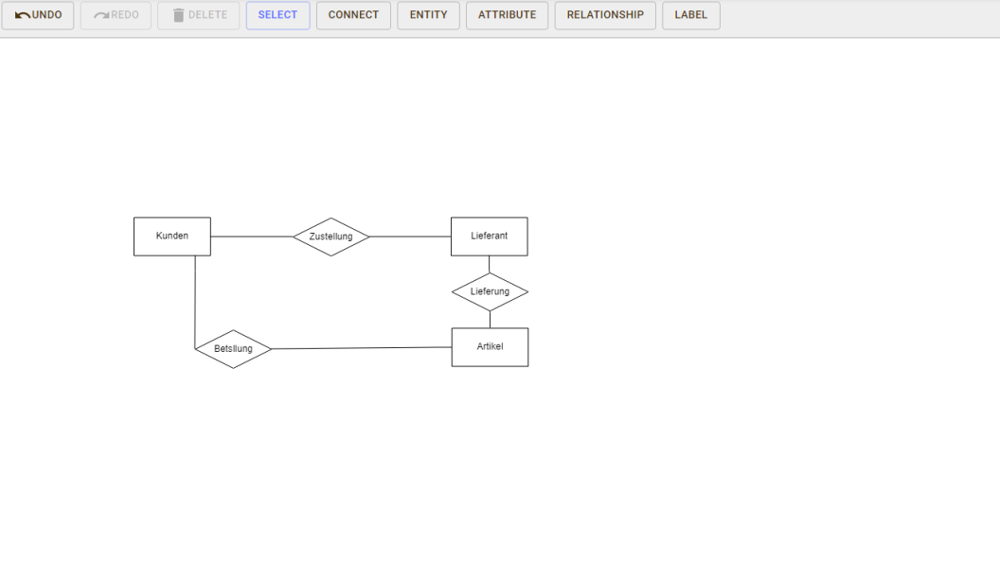
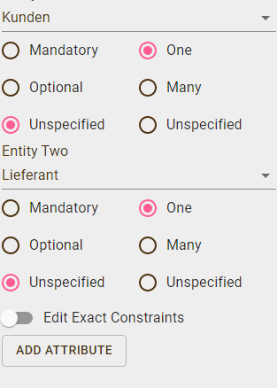
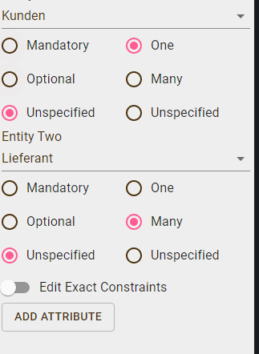

Datenbanken - Was steckt dahinter?
Entity-Relationship-Modell Erstellen
Mit dem Kasten „Attribute“ kann man dann die Unterpunkte hinzufügen also die einzelnen Informationen zum Kunden wie z.B. Name, Nachname. Dazu kommt noch der Primärschlüssel, der ebenfalls sehr wichtig als Attribut ist, da man ihn in jedem ERM benötigt. Einen Primärschlüssel kann man in einem Attribut hinzufügen indem man, wie auf dem Bild gezeigt, auf der rechten Seite bei Typen in dem Feld „Unique“ ein hacken setzt.
Mit dem Kasten Relationship erstell man Verbindungen, wie z.B. oben im Beispiel angegeben von Kunden zu Artikel (Der Kunde (Entity) wird durch eine Bestellung (Relationship) mit dem Artikel verbunden (Entity)). Der Artikel (Entity) wird mit dem Lieferanten (Entity) durch das erhalten (Relationship) und des Artikels verbunden und er Lieferanten(Entity) mit dem Kunden(Entity) durch die Zustellung(Relationship) des Artikels. Dazu kommt das man den „Relationships“ noch eine Beziehung hinzufügen kann ( 1:n/ 1:1/ n:m) Dies gibt z.B. an das der Kunde mehrere Artikel bestellen kann und ein Artikel von mehreren Kunden bestellt werden kann.
1:1 Beziehung

1:n Beziehnung

n:m Beziehung
n:m Beziehung
Access Quiz
Videos
Übungsaufgaben
Im folgenden finden Sie einige Übungsaufgaben. Alle Übunbgsaufgaben basieren auf eine von uns erstellte
Datenbank.
Um diese herunterzuladen, klicken sie auf den knopf "Datenbank Herunterladen".
Zu jeder Aufgabe gibt es
Tipps und
Lösungen. Wenn Sie hilfe benötigen, klicken sie auf den -Knopf. Sie können
sich
selbst Kontrollieren, indem Sie die Lösungen in der Datenbank anschauen.